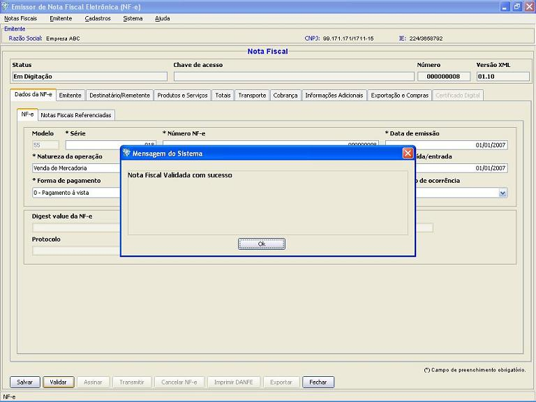
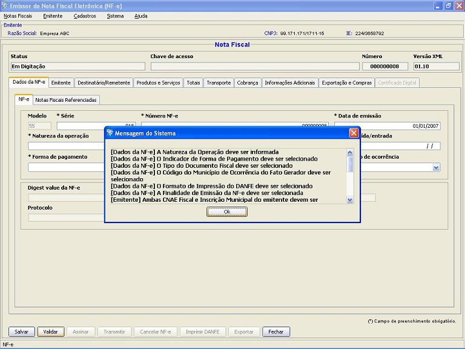
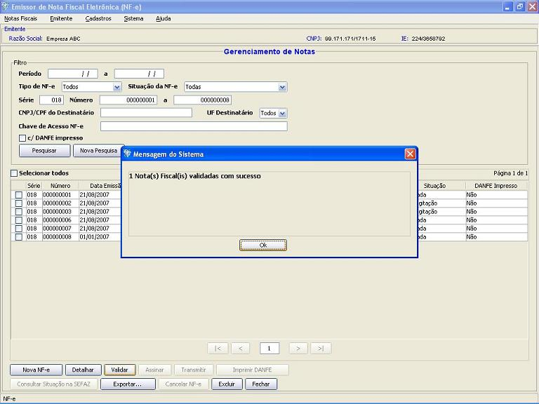

Software Emissor NF-e
Validando uma Nota
Fiscal
eletrônica (NF-e)
A
validação estrutural da NF-e.
Esta validação verificará se a NF-e
tem todos os
seus campos obrigatórios preenchidos e se o formato dos
mesmos
estão em acordo com a estrutura definida.
No processo de validação, caso a
verificação ocorra com sucesso, o Software
irá
salvar a nota automaticamente.
IMPORTANTE: A
VALIDAÇÃO
DA NF-e NÃO ABRANGE A CONSISTÊNCIA DOS DADOS
INFORMADOS,
SENDO ESTES DE EXCLUSIVA RESPONSABILIDADE DO EMITENTE.
Pré-condição:
-Um emitente
deverá estar previamente iniciado.
-Deve(m) ser selecionado(s)
NF-e('s) em
situação igual a "Em
Digitação" ou uma NF-e
em criação que ainda
não foi salva
Existem duas formas para a realização da
validação:
1 ) Pela tela de
Inclusão/Edição da NF-e:
- Na tela de inclusão
ou edição de NF-e, acessar a
opção Validar
- Caso
não haja pendências
no preenchimento da nota, esta passará para a
situação "Validada". O Software gerará
a Chave de Acesso da
NF-e, que será o identificador da NF-e
nas consultas no site da SEFAZ. Caso haja pendências, o
Software informará quais foram os problemas encontrados.

Caso haja
pendências, o Softwar irá informar os dados
faltantes:

2 ) Pela tela de
Gerenciamento de NF-e's:
- Acessar o menu: Notas Fiscais -> Gerenciar
Notas
- Realizar a
pesquisa pela(s) nota(s) com situação "Em
Digitação"
que será(ão) validada(s)
- Selecionar a(s)
nota(s) a ser(em) validadas e clicar em Validar
- Caso
não haja pendências
no preenchimento da(s) nota(s), esta(s)
passará(ão) para a
situação "Validada". O Software gerará
a Chave de Acesso da
NF-e
de cada uma, que será o identificador da NF-e
nas consultas no site da SEFAZ. Caso haja pendências, o
Software
alertará quais NF-e's não foram
possíveis de
validação. Para maiores detalhes, realizar o
detalhamento
da NF-e com pendência e verificá-la.
Validação com
sucesso pelo gerenciamento:
